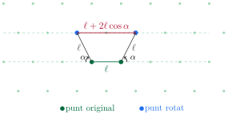
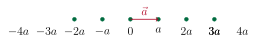
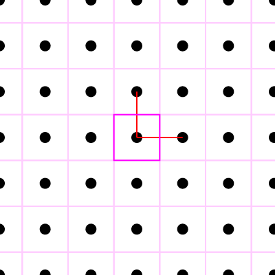
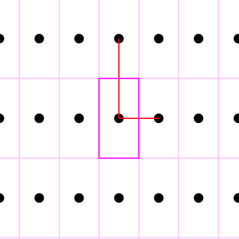
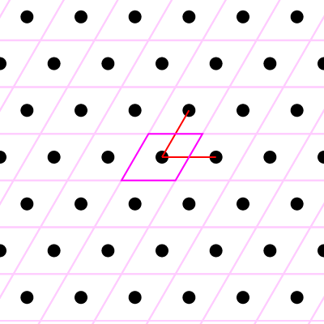
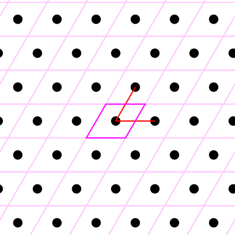
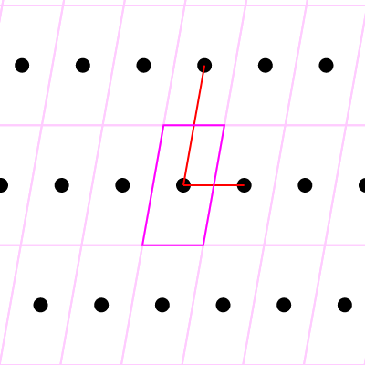
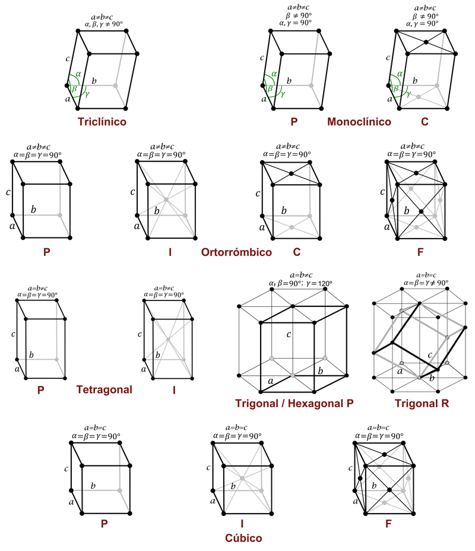
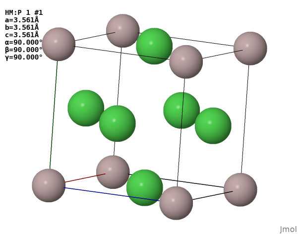

Tema 1Xarxes cristal·lines
Índex
1 Xarxa de Bravais i vectors primitius
La xarxa de Bravais només descriu la periodicitat: no diu res, encara, de quins àtoms hi ha ni de com estan col·locats dins de cada període — això ho farà més endavant la base (secció 4).
Els vectors primitius no són únics. Donada una xarxa, existeixen infinites eleccions vàlides de \(\{\vec{a}_1,\vec{a}_2,\vec{a}_3\}\): qualsevol combinació lineal amb coeficients enters i determinant \(\pm1\) d'una base primitiva en dona una altra d'igualment vàlida. Dues bases \(\{\vec{a}_i\}\) i \(\{\vec{a}'_i\}\) generen la mateixa xarxa si i només si existeix una matriu \(M\) de coeficients enters, amb \(M^{-1}\) també de coeficients enters, tal que \(\vec{a}'_i=\sum_j M_{ij}\vec{a}_j\). En particular, això vol dir que si es pot escriure cada \(\vec{a}_i\) com a combinació lineal entera dels \(\vec{a}'_j\) (i viceversa), les dues bases són equivalents.
1.1 Cel·la primitiva, cel·la convencional i cel·la de Wigner-Seitz
El volum de la cel·la primitiva és sempre el mateix, independentment de la forma concreta que es triï: \[V_{\text{primitiva}} = |\vec{a}_1\cdot(\vec{a}_2\times\vec{a}_3)|.\]
2 Simetries de rotació compatibles amb la translació
Una pregunta natural: quines rotacions puntuals pot admetre una xarxa periòdica? La resposta és sorprenentment restrictiva, i és l'origen últim dels 7 sistemes cristal·lins.

Siguin dos punts contigus d'una xarxa de Bravais (en verd a la figura) separats una distància \(\ell\). Apliquem a cadascun una rotació d'angle \(\alpha=2\pi/n\) al voltant d'un eix perpendicular que passi per un punt de la xarxa; aquesta transformació porta cada punt original al corresponent punt blau, que també ha de ser un punt de la xarxa (per definició, una simetria de rotació deixa la xarxa invariant). La distància entre els dos punts rotats, projectada sobre la direcció original, ha de ser també un múltiple enter \(m\ell\) del paràmetre de xarxa: \[\ell + 2\ell\cos\alpha = m\ell, \qquad m\in\mathbb{Z}.\] Com que \(-1\leq\cos\alpha\leq1\), això només és possible per a \(m\in\{-1,0,1,2,3\}\), és a dir \[\alpha = 180^\circ,\ 120^\circ,\ 90^\circ,\ 60^\circ,\ 0^\circ \quad\Longleftrightarrow\quad n=2,3,4,6,1.\] Una rotació de \(n=5\) (o \(n\geq7\)) mai és compatible amb una xarxa periòdica infinita — per això no existeix cap cristall amb simetria pentagonal exacta, per molt bonic que sigui l'exemple d'un pentàgon aïllat.
Només \(n=1,2,3,4,6\) són compatibles amb la periodicitat. Això no vol dir que una xarxa donada tingui totes aquestes simetries: la xarxa obliqua en 2D només té \(n=1,2\) (cap simetria addicional), mentre que l'hexagonal en té \(n=6\). El conjunt de totes les simetries puntuals (rotacions, reflexions) que deixen invariant una xarxa donada s'anomena el seu grup puntual, i un sistema cristal·lí és, per definició, el conjunt de xarxes de Bravais que comparteixen el mateix grup puntual. En 3D hi ha exactament 7 sistemes cristal·lins (cúbic, tetragonal, ortoròmbic, monoclínic, triclínic, trigonal i hexagonal) — cadascun és una "família" dins la qual poden aparèixer diverses xarxes de Bravais (el sistema cúbic, per exemple, conté les xarxes SC, BCC i FCC).
3 Xarxes de Bravais en 1D, 2D i 3D
3.1 1D
En una dimensió només hi ha una xarxa de Bravais possible: punts equiespaiats \(x=na\).

3.2 2D
En dues dimensions, un cop s'imposen totes les simetries de rotació compatibles amb la periodicitat (secció 2), només hi ha 5 xarxes de Bravais diferents:
 |  |  |
| Quadrada: \(a=b\), \(\alpha=90^\circ\) | Rectangular: \(a\neq b\), \(\alpha=90^\circ\) | Rectangular centrada |
 |  | |
| Hexagonal: \(a=b\), \(\alpha=60^\circ\) | Obliqua: \(a\neq b\), \(\alpha\neq90^\circ\) |
Totes cinc es poden construir al simulador Xarxes de Bravais i difracció, movent els vectors primitius i la base, amb la cel·la convencional i la de Wigner-Seitz superposades.
3.3 3D
En tres dimensions, el mateix argument de compatibilitat entre rotació i translació (secció 2) restringeix les possibilitats a 14 xarxes de Bravais, agrupades en 7 sistemes cristal·lins (cúbic, tetragonal, ortoròmbic, monoclínic, triclínic, trigonal i hexagonal) segons quines simetries de rotació addicionals admeten. La figura següent mostra les 14 xarxes agrupades pels 7 sistemes:

Les operacions de simetria que distingeixen cada sistema es poden comprovar una a una al simulador Grups puntuals dels 7 sistemes cristal·lins.
Per a sistemes cúbics, els vectors primitius habituals per a una xarxa de costat de cub convencional \(a\)) són
\[\text{SC:}\quad \vec{a}_1=\tfrac{a}{2}(1,0,0),\ \ \vec{a}_2=\tfrac{a}{2}(0,1,0),\ \ \vec{a}_3=\tfrac{a}{2}(0,0,1),\] \[\text{BCC:}\quad \vec{a}_1=\tfrac{a}{2}(-1,1,1),\ \ \vec{a}_2=\tfrac{a}{2}(1,-1,1),\ \ \vec{a}_3=\tfrac{a}{2}(1,1,-1),\] \[\text{FCC:}\quad \vec{a}_1=\tfrac{a}{2}(0,1,1),\ \ \vec{a}_2=\tfrac{a}{2}(1,0,1),\ \ \vec{a}_3=\tfrac{a}{2}(1,1,0).\]
Els vectors per a BCC i FCC defineixen un cub convencional de costat \(a\): la cel·la primitiva real és més petita (i menys simètrica visualment) que la cel·la convencional. Amb aquests vectors, un punt genèric de la xarxa \(\vec{T}=l\vec{a}_1+m\vec{a}_2+n\vec{a}_3=\tfrac{a}{2}(\lambda,\mu,\nu)\) només pot tenir certes combinacions de \((\lambda,\mu,\nu)\) enters.
A les quatre vistes, cada àtom es dibuixa sencer encara que només una fracció seva pertanyi a la cel·la: un vèrtex es comparteix entre \(8\) cel·les i un centre de cara entre \(2\), i és aquesta fracció la que entra al recompte. A la versió web dels apunts les cel·les es poden girar amb el ratolí; els \(4\) àtoms interiors del diamant no formen part de la xarxa de Bravais FCC pròpiament dita, sinó del motiu que s'enganxa a cada punt de xarxa.
4 Base atòmica: cristall \(=\) xarxa \(+\) base
De manera més formal, la posició de qualsevol àtom del cristall es pot escriure com \[\vec r = \vec T + \vec R_c,\] on \(\vec T\) és un vector qualsevol de la xarxa de Bravais i \(\vec R_c\) és la posició fixa de l'àtom \(c\) dins la base, relativa a l'origen de la cel·la — el mateix conjunt \(\{\vec R_c\}\) es repeteix, sense canviar, a cada \(\vec T\).
Aquesta distinció és més subtil del que sembla a primer cop d'ull, perquè la mateixa disposició d'àtoms pot amagar xarxes de Bravais diferents segons quins àtoms es considerin "el mateix tipus":
Un segon exemple, encara més ric, és l'estructura tipus diamant: dues xarxes FCC entrellaçades, desplaçades \(\tfrac14\) de la diagonal principal de la cel·la convencional l'una respecte de l'altra — és a dir, una xarxa FCC amb una base de 2 àtoms idèntics a \((0,0,0)\) i \(\left(\tfrac a4,\tfrac a4,\tfrac a4\right)\) (els punts ambre de la figura de la secció anterior). Aquesta estructura (que comparteixen el diamant, el silici i el germani) té una fracció d'ocupació geomètrica notablement menor que una FCC "plena" (Exercici 1.7), perquè els àtoms de les dues subxarxes es "fan nosa" mútuament sense arribar mai a tocar-se tan eficientment com en un empaquetament compacte.
Finalment, un aliatge ordenat (a diferència d'una simple substitució aleatòria) també es descriu amb aquest llenguatge: al compost Ni\(_3\)Al, els àtoms d'alumini ocupen sistemàticament els vèrtexs d'un cub mentre el níquel ocupa els centres de les cares — vegeu l'Exercici 1.5 per identificar-ne la xarxa de Bravais i la base.

5 Càlcul de paràmetres d'ocupació
5.1 Densitat numèrica i densitat màssica
La densitat numèrica \(n\) és el nombre d'àtoms per unitat de volum: \[n = \frac{N}{V_{\text{cel{\textperiodcentered}la}}},\] on \(N\) és el nombre d'àtoms continguts a la cel·la (comptats complets, igual que per calcular \(f\)) i \(V_{\text{cel{\textperiodcentered}la}}\) el seu volum. El resultat no depèn de quina cel·la es triï: si la cel·la convencional conté \(Z\) vegades més àtoms que la primitiva, també té \(Z\) vegades més volum, i el quocient \(n\) és el mateix.
Un cop es coneix \(n\), la densitat màssica \(\rho\) s'obté multiplicant per la massa de cada àtom: \[\rho = n\, m_{\text{àtom}} = \frac{N}{V_{\text{cel{\textperiodcentered}la}}}\cdot\frac{M}{N_A},\] on \(M\) és la massa molar de l'element (g/mol) i \(N_A\) el nombre d'Avogadro. Aquesta relació és la que permet, per exemple, deduir el paràmetre de xarxa \(a\) d'un metall a partir de la seva densitat mesurada experimentalment (o, a l'inrevés, predir \(\rho\) coneixent l'estructura cristal·lina).
5.2 Distància entre plans cristal·logràfics i densitat superficial
Els àtoms d'una xarxa es poden agrupar en famílies de plans paral·lels i equiespaiats, indexats pels índexs de Miller \((hkl)\) (que introduirem amb la xarxa recíproca al proper capítol). La distància entre dos plans consecutius d'una mateixa família, \(d_{hkl}\), ve fixada pel vector de la xarxa recíproca \(\vec{G}_{hkl}\) associat: \[d_{hkl} = \frac{2\pi}{|\vec{G}_{hkl}|}.\] Per a un sistema cúbic de paràmetre \(a\), aquesta expressió es redueix a la forma més coneguda \[d_{hkl} = \frac{a}{\sqrt{h^2+k^2+l^2}}.\]
Dins d'un pla cristal·logràfic concret, es pot definir també una densitat superficial \(n_A\): el nombre d'àtoms per unitat d'àrea continguts en aquell pla, \[n_A = \frac{N_{\text{pla}}}{A_{\text{pla}}}.\]
Si tots els plans d'una mateixa família \((hkl)\) són equivalents per simetria de translació —cadascun conté la mateixa densitat superficial \(n_A\)— i estan separats una distància \(d_{hkl}\), aleshores tots els àtoms continguts en un "gruix" de cristall igual a \(d_{hkl}\) es reparteixen en un únic d'aquests plans. Volum i superfície queden així lligats per \[n = \frac{n_A}{d_{hkl}} \qquad\Longleftrightarrow\qquad n_A = n\, d_{hkl}.\] Aquesta relació és útil per estimar la densitat atòmica superficial d'un pla concret (rellevant en creixement epitaxial o en catàlisi de superfície) a partir de dades volumètriques macroscòpiques (\(n\), obtinguda de \(\rho\)), sense necessitat de comptar àtoms pla a pla.
5.3 Fracció d'ocupació (packing fraction)
Una manera senzilla de quantificar "com d'atapeïda" és una estructura és preguntar-se quin percentatge del volum de la cel·la ocuparien esferes rígides idèntiques centrades a cada posició atòmica, si el seu radi es fes créixer just fins que comencessin a tocar-se entre elles: \[f = \frac{N\, V_{\text{esfera}}}{V_{\text{cel{\textperiodcentered}la}}},\] on \(N\) és el nombre d'àtoms (complets, no fraccions tallades per la vora) continguts a la cel·la que es faci servir per calcular \(V_{\text{cel{\textperiodcentered}la}}\), i el radi de l'esfera ve fixat per la distància al veí més proper. Calcular explícitament \(f\) per a les estructures cúbica simple, FCC i diamant (Exercici 1.7) és una bona manera de veure numèricament per què certes estructures (com la FCC, \(f\approx0.74\), el màxim possible per a esferes idèntiques) són tan freqüents en metalls reals, mentre que estructures obertes com el diamant (\(f\approx0.34\)) només apareixen quan hi ha enllaços direccionals (covalents) que premien la baixa coordinació per sobre de l'empaquetament compacte.